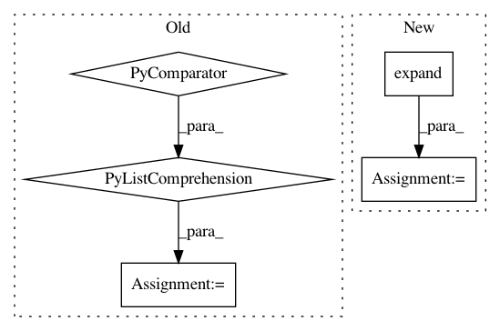

23973f45c189d3cbe34645350cd4f670f7999272,gpytorch/lazy/cat_lazy_tensor.py,CatLazyTensor,_matmul,#CatLazyTensor#Any#,204
Before Change
rhs = rhs.unsqueeze(0)
curr_idx = 0
res_list = []
index = [slice(None, None, None) for _ in range(self.ndimension())]
for t, size, rhs in zip(self.lazy_tensors, self.cat_dim_sizes, rhs_):
index[self.cat_dim] = slice(curr_idx, curr_idx + size, None)
res_list.append(t._matmul(rhs[index]))
curr_idx += size
After Change
res = torch.sum(torch.stack(res_list), dim=0)
else:
output_shape = _matmul_broadcast_shape(self.shape, rhs.shape)
rhs = rhs.expand(*output_shape[:-2], *rhs.shape[-2:])
curr_idx = 0
res_list = []
for t, size in zip(self.lazy_tensors, self.cat_dim_sizes):
sub_rhs = rhs.narrow(self.cat_dim, curr_idx, size)
res_list.append(t._matmul(sub_rhs))
curr_idx += size
// copy result back to output device
res_list = [x.to(output_device) for x in res_list]
In pattern: SUPERPATTERN
Frequency: 3
Non-data size: 5
Instances
Project Name: cornellius-gp/gpytorch
Commit Name: 23973f45c189d3cbe34645350cd4f670f7999272
Time: 2019-03-18
Author: gpleiss@gmail.com
File Name: gpytorch/lazy/cat_lazy_tensor.py
Class Name: CatLazyTensor
Method Name: _matmul
Project Name: pytorch/pytorch
Commit Name: a347c747df8302acc0007a26f23ecf3355a5bef9
Time: 2021-01-25
Author: fritz.obermeyer@gmail.com
File Name: torch/distributions/logistic_normal.py
Class Name: LogisticNormal
Method Name: __init__
Project Name: brian-team/brian2
Commit Name: 715871c2af3d01f9c1ff1154ae79bed0e9db8494
Time: 2013-05-30
Author: marcel.stimberg@ens.fr
File Name: brian2/stateupdaters/exact.py
Class Name:
Method Name: get_linear_system